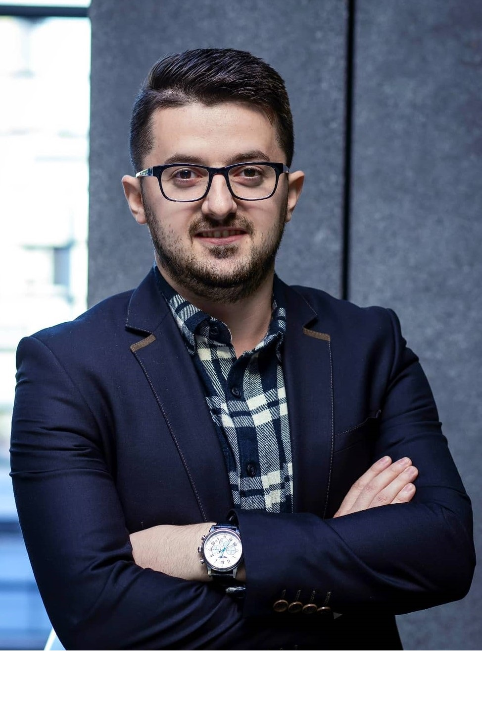

Job: Data Scientist
University: RWTH Aachen
Degree: MSc. Software
Systems Engineering
Birthday: 09.06.1993
Nationality: Albanian
Languages:
Professional Networks:
CV:
Without data, you are just another person with an opinion!
Welcome to my personal webpage. My name is Desared Osmanllari, a passionate data scientist who is eager to learn and work with the latest discoveries concerning Machine Learning, Big Data, and Artificial Intelligence.
In my current job, I am working in a team of data scientists, assigned to develop data-driven products, which are later integrated into the business process. Using cloud computing (e.g. GCP and AWS), it is managable to deploy and operate data-driven applications on the web. I have gained knowledge on predictive analytics, using statistics, data mining, machine learning, and artificial intelligence to analyze historical data in order to make predictions about the future. Lately, I am working on recommender systems. These web services are widely used in commercial applications and online shops.
Concerning my studies, I am graduated from RWTH Aachen University with a master degree in Software Systems Engineering. During this time, I worked as a student helper by the Advanced Community Information Systems group and as a teaching assistant by the Big Data & Model Management group. Additionally, I attended two internships in the area of Data Science.
Regarding my bachelor studies, I received a double degree in Computer Science and Information Systems from the American University in Bulgaria. I was awarded Cum Laude and received Phi Beta Delta honorary price for my international experiences.
Besides studies and work, my daily routine is mainly focused to my friends, personal projects, football and fitness. Another hobby of mine is travelling because it exposes you to unique cultures, different people, various ways of living, and opens your mind to better undestand the world.
You can visit my Linkedin profile to have a deeper look into my academic and professional background. The latest open source projects I am involved in are accessible through my Github page. For a more comprehensive PDF version of my CV, please download it under the PDF icon on the left tab.